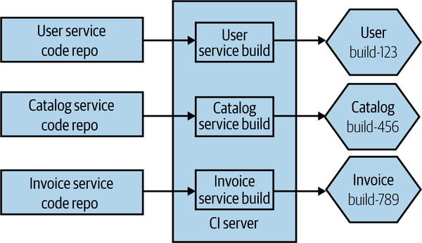

Continuous Integration
"Adopting a CI tool does not mean you are doing CI".
Questions to check if you are really doing CI:
There is one trunk branch, the developers commit directly to the trunk. If they need they might create short-lived feature branches whose lifetime is a few hours to a day at most. The way to handle the breaking changes is using feature flags i.e feature toggling. The deployment is directly done from the trunk.
We found that having branches or forks with very short lifetimes (less than a day) before being merged into trunk, and less than three active branches in total, are important aspects of continuous delivery, and all contribute to higher performance. So does merging code into trunk or master on a daily basis.
General best practice: Build your artifacts once and once only. Ideally do it pretty early in the pipeline. Then this artifact is stored in some registry.
Depending on how you do Monorepos you can get in a lot of trouble for example, pushing code into one service means I need to build and test the others as well.
A simple starting point is to map folders inside the monorepo to a build. But in complex structures you might want multiple folders to trigger one build and you might have a common folder used by all microservices. Bazel can help with these to manage these dependencies better.
With one repository per microservice, there is straightforward mapping between the code and pipelines. It also makes independent deployability easier.

But there are challenges however, developers might find it difficult working with multiple repos at once. Especially painful when you are trying to change multiple services at once.
There is also the challenge of code reuse, you need to create packages of common code and deploy it in a package repository and then version control it as well.
There are 3 types of ownership:
Github has supported this for a long time using CODEOWNERS file.
# In this example, @doctocat owns any files in the build/logs
# directory at the root of the repository and any of its
# subdirectories.
/build/logs/ @doctocat
# In this example, @octocat owns any file in an apps directory
# anywhere in your repository.
apps/ @octocat
# In this example, @doctocat owns any file in the `/docs`
# directory in the root of your repository.
/docs/ @doctocat